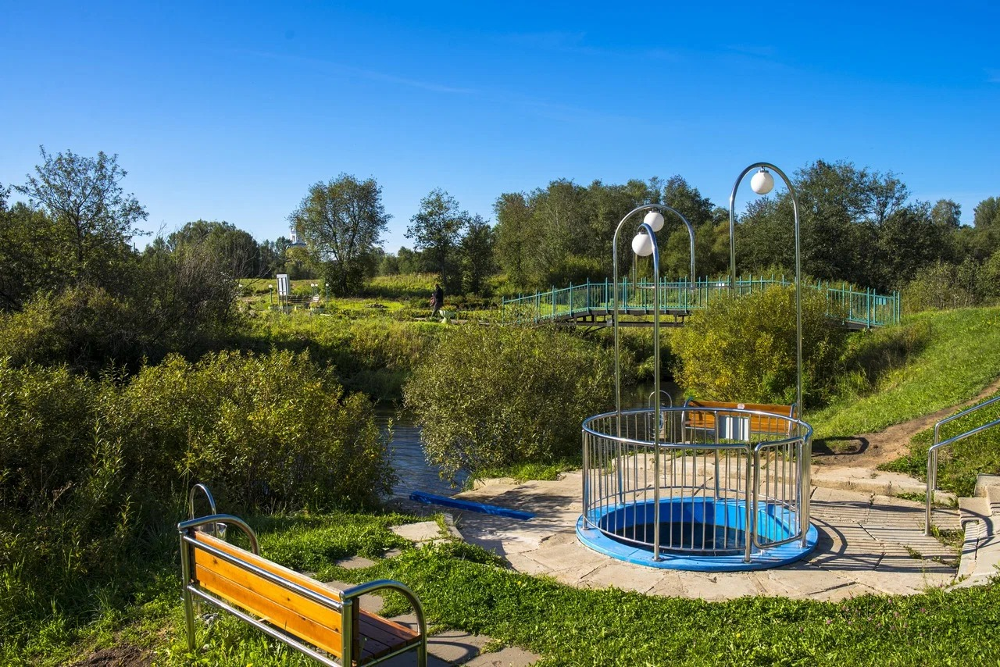

Route 01
From the sanatorium to the springs
Follow the path along the Ivkina to the rotunda. The springs are about a five-minute walk from there; signs mark the locations.
The route goes across the Wish Bridge.
Guidebook
The springs are on the left bank of the Ivkina River, below the bridge near the settlement. This page includes a route and guidelines for a thoughtful visit.
Follow the path along the Ivkina to the rotunda. The springs are about a five-minute walk from there; signs mark the locations.
The route goes across the Wish Bridge.

Follow the maintained park area with paths, benches and evening lighting to the rotunda.
The springs and river do not freeze even in winter. Plan your visit around the weather and daylight.